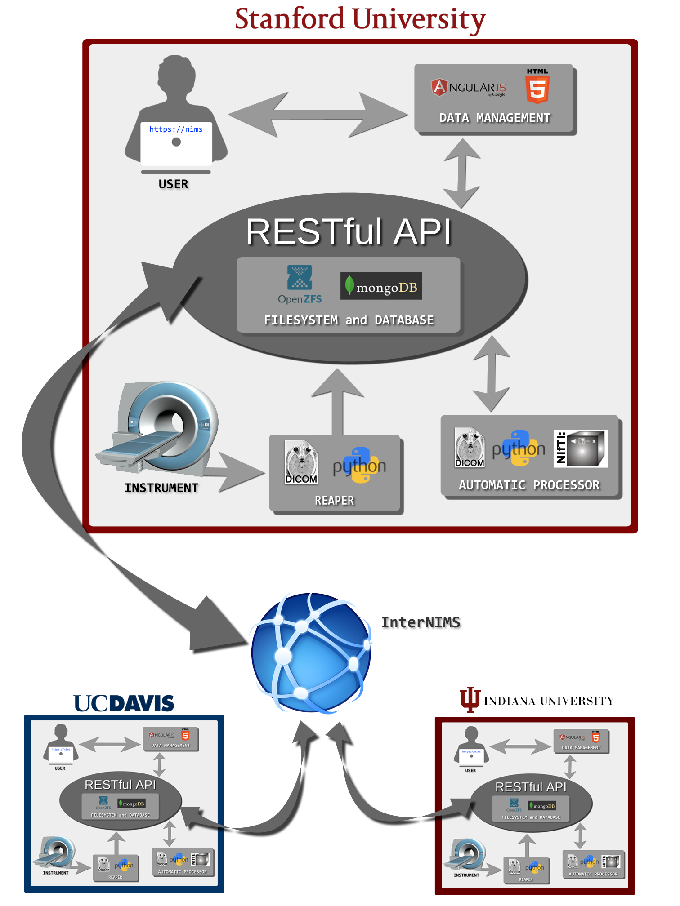

Neurobiological Image Management System (NIMS)
NIMS is a scientific data management system, specifically designed for neuroimaging data.
Click each section of the diagram to learn more about NIMS and access documentation.
Instrument ↥
The instrument, in this diagram represented by an MRI scanner, trasmits data directly and securely into the NIMS pipeline. The trasfer takes place via a private network connection. Other instruments, which output a standardized file type (e.g., DICOM) can be used as the source for data coming into the pipeline.
Reaper ↥
Reaper is the point of contact between the Instrument and the NIMS pipeline. Reaper is engineered in Python and "talks" directly with the instrument and "reaps" every data file that is captured (e.g., every DICOM file) for sorting and processing into the NIMS database. Reaper communicates with the rest of the NIMS pipeline via the RESTful API.
Importantly, Reaper allows data to enter the NIMS framework without any user interaction whatsoever. If a scan is performed on an intrument, the raw data will be captured and entered into the database, period. This removes worries about user compliance and shifts the burden of capture and archiving from the user to the software.
Filesystem and Database ↥
Once Reaper has sent the data thorugh the API those data are sorted (using metadata) and insterted into the database. NIMS uses MongoDB - which is a no-SQL, cross-platform, document-oriented database. MongoDB allows the NIMS database to be incredibly flexible by virtue of its dynamic schemas.
NIMS servers run OpenZFS for raw data storage and backup. ZFS is a combined file system and logical volume manager which provides protection against data corruption, support for high storage capacities, efficient data compression, integration of the concepts of filesystem and volume management, snapshots and copy-on-write clones, continuous integrity checking and automatic repair, RAID-Z and native NFSv4 ACLs ref.
RESTful API ↥
The NIMS API (Application Programming Interface) has been engineered to adhere to the tenets of the REST (REpresentational State Transfer) framework and architectural style. The RESTful architectural style "ignores the details of component implementation and protocol syntax in order to focus on the roles of components, the constraints upon their interaction with other components, and their interpretation of significant data elements" ref.
Automatic Processor ↥
Once raw data are reaped and sorted into the database they are automatically processed using tools engineered in Python, using various open-source libraries.
NIMSdata takes raw data and performs various processing tasks. For example, raw DICOM data from GE or Siemens scanners are converted to a widely used, compressed file format -- NIfTI. Quality Assurance metrics are automatically computed and made available alongside raw data. We have also built upon visualization toolkits to make viewing data within the NIMS UI as simple as clicking a button.
NIMSdata is engineered to be modular -- researchers can design their own purpose-built computational modules that can plug-in to NIMSdata and perform special processing operations.
For more detailed information, have a look at the NIMSdata documentation.
Data Management ↥
Data management as well as user rights and permissions are all handled via a custom-engineered web UI built with HTML5 and AngularJS. The NIMS UI allows users' access to their data and provides the interface through which they can browse, organize, download and search their data.
Users may also search for and request access to data at remote sites. Users can also create Virtual Projects consisting of data across projects, labs and even instuttions. Sharing and permissions are managed within the NIMS UI. Acess to the NIMS UI is managed via OAuth.
User ↥
NIMS is user focused. At each stage of development our team was completed focused on what was important for everyday users. We wanted to develop a system that was as simple and easy to use as possible.
That's why we developed REAPER, which direcly communicates with the Instrument, relieving the burdon normally befalling the user to actually get their data into the system. By making that step automatic users can rest assured that every byte the instrument produces gets into the system.
We also developed our Automatic Processing pipeline with the user in mind. For example, a very well known issue in neuroimaging is conversion of raw data to a standardized file format, adhering to accepted conventions. We take this step for the user and convert GE and Siemens raw dicom files to NIfTI. Those NIfTI files are then stored in the database and appear alongside the raw data, allowing the user to download raw data, NIfTI data, or both. Not only does this make sure that file formats are correct, but alleviates the computational and organizational burdon that users typically face.
No where is our user-focused approach more evident than in the UI design of the NIMS web application. The NIMS UI is the only point of contact to the entire system for 99.99% of all users. The prime objective of our Web Dev team is making a simple yet incredibly powerful interface that makes data management as easy as possible.
InterNIMS ↥
InterNIMS makes it possible for peer discovery, cross-site database queries and data sharing. While running, a NIMS site will brodcast its existence to InterNIMS which will securely provide cross-site access to resources.
Remote Sites ↥
Remote sites running their own instance of NIMS can communicate with one another securely (via InterNIMS) allowing for researchers from any one site to search and share data with those at other sites around the world.